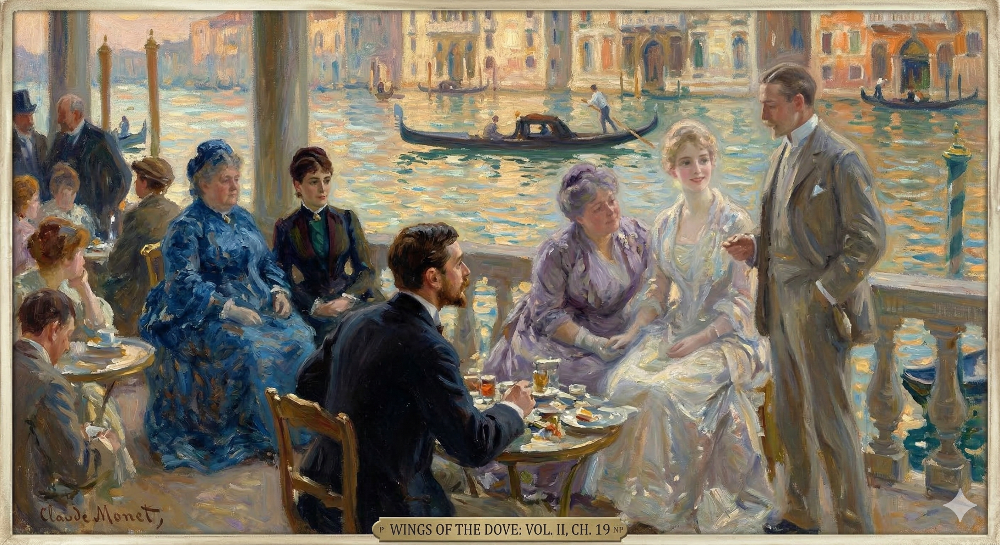

Milly tells Mrs. Stringham that she intends to visit Sir Luke Strett to say goodbye and thank him. They have a conversation in which Milly expresses her belief that the doctor pities her, while Mrs. Stringham insists he just likes her. Milly embraces her friend and promises not to be difficult with the doctor.
Milly then visits Sir Luke. She tells him she came to thank him for his good nature. He notes that she is looking well. She informs him that she is leaving for the Tyrol and then Venice on the fourteenth. Sir Luke replies that he also plans to be in Venice in October with his niece, and they agree to meet there.
He asks who she is traveling with, and she says Mrs. Stringham and two other ladies will be with her. Milly specifies that one of the women is Miss Croy. She then adds that a man, Mr. Densher, who is in love with Miss Croy, is also likely to be in Venice. When Sir Luke asks if she can help Mr. Densher, Milly asks if he can.
As Milly prepares to leave, Sir Luke tells her that she has a splendid life ahead of her and that she is "all right." She gives him her hand to say goodbye, and he repeats his offer to help Mr. Densher. Milly says his case is not so dreadful and that there is nothing that can be done.
This character study focuses on the immediate presentation and situational shifts of the three individuals in the text.
He had said to her in the Park when challenged on it that nothing had "happened" to him as a cause for the demand he there made of her—happened he meant since the account he had given, after his return, of his recent experience. But in the course of a few days—they had brought him to Christmas morning—he was conscious enough, in preparing again to seek her out, of a difference on that score. Something had in this case happened to him, and, after his taking the night to think of it he felt that what it most, if not absolutely first, involved was his immediately again putting himself in relation with her. The fact itself had met him there—in his own small quarters—on Christmas Eve, and had not then indeed at once affected him as implying that consequence. So far as he on the spot and for the next hours took its measure—a process that made his night mercilessly wakeful—the consequences possibly implied were numerous to distraction. His spirit dealt with them, in the darkness, as the slow hours passed; his intelligence and his imagination, his soul and his sense, had never on the whole been so intensely engaged. It was his difficulty for the moment that he was face to face with alternatives, and that it was scarce even a question of turning from one to the other. They were not in a perspective in which they might be compared and considered; they were, by a strange effect, as close as a pair of monsters of whom he might have felt on either cheek the hot breath and the huge eyes. He saw them at once and but by looking straight before him; he wouldn't for that matter, in his cold apprehension, have turned his head by an inch. So it was that his agitation was still—was not, for the slow hours a matter of restless motion. He lay long, after the event, on the sofa where, extinguishing at a touch the white light of convenience that he hated, he had thrown himself without undressing. He stared at the buried day and wore out the time; with the arrival of the Christmas dawn moreover, late and grey, he felt himself somehow determined. The common wisdom had had its say to him—that safety in doubt was not action; and perhaps what most helped him was this very commonness. In his case there was nothing of that—in no case in his life had there ever been less: which association, from one thing to another, now worked for him as a choice. He acted, after his bath and his breakfast, in the sense of that marked element of the rare which he felt to be the sign of his crisis. And that is why, dressed with more state than usual and quite as if for church, he went out into the soft Christmas day.
When she had questioned him about it in the park, he'd said nothing had "happened" to him to justify the request he'd made of her—he meant since the story he'd told after he'd returned from his recent experience. But within a few days—they'd reached Christmas morning—he realized, as he prepared to see her again, that things were different. Something *had* happened to him this time. After a night of thinking about it, he felt that the most important, if not the first, consequence was that he needed to immediately reconnect with her. The event itself had occurred in his apartment on Christmas Eve, and at first, it hadn't immediately seemed to him to have that consequence. As far as he could tell at the time, and for the next few hours—a process that kept him awake all night—the possible consequences were overwhelming. His mind wrestled with them in the darkness as the long hours passed. His intelligence, his imagination, his emotions, and his senses had never been so intensely engaged. His immediate problem was that he was faced with multiple possibilities, and it wasn't even a question of choosing between them. They weren't in a position where he could compare and consider them. Strangely, they were as close as a pair of monsters, and he could feel their hot breath and see their huge eyes on either side of his face. He saw them all at once just by looking straight ahead. In his fear, he wouldn't have turned his head an inch. So, despite his distress, he remained still—for hours he didn't move restlessly. After the event, he lay for a long time on the sofa, where he'd thrown himself down without undressing, turning off the harsh white light that he hated. He stared at the fading day and waited for time to pass. When Christmas dawn finally arrived, late and grey, he felt determined. The usual advice had told him that caution, in a moment of doubt, wasn't action, and perhaps what helped him the most was that this was so ordinary. In his case, it was the opposite—there had never been less caution in his life: this association, from one thing to another, now served as his choice. After his bath and breakfast, he acted according to that defining element of the unusual, which he felt was the sign of his crisis. And that's why, dressed more formally than usual, as if going to church, he went out into the mild Christmas day.
Action, for him, on coming to the point, it appeared, carried with it a certain complexity. We should have known, walking by his side, that his final prime decision hadn't been to call at the door of Sir Luke Strett, and yet that this step, though subordinate, was none the less urgent. His prime decision was for another matter, to which impatience, once he was on the way, had now added itself; but he remained sufficiently aware that he must compromise with the perhaps excessive earliness. This, and the ferment set up within him, were together a reason for not driving; to say nothing of the absence of cabs in the dusky festal desert. Sir Luke's great square was not near, but he walked the Distance without seeing a hansom. He had his interval thus to turn over his view—the view to which what had happened the night before had not sharply reduced itself; but the complexity just mentioned was to be offered within the next few minutes another item to assimilate. Before Sir Luke's house, when he reached it, a brougham was drawn up—at the sight of which his heart had a lift that brought him for the instant to a stand. This pause wasn't long, but it was long enough to flash upon him a revelation in the light of which he caught his breath. The carriage, so possibly at such an hour and on such a day Sir Luke's own, had struck him as a sign that the great doctor was back. This would prove something else, in turn, still more intensely, and it was in the act of the double apprehension that Densher felt himself turn pale. His mind rebounded for the moment like a projectile that has suddenly been met by another: he stared at the strange truth that what he wanted more than to see Kate Croy was to see the witness who had just arrived from Venice. He wanted positively to be in his presence and to hear his voice—which was the spasm of his consciousness that produced the flash. Fortunately for him, on the spot, there supervened something in which the flash went out. He became aware within this minute that the coachman on the box of the brougham had a face known to him, whereas he had never seen before, to his knowledge, the great doctor's carriage. The carriage, as he came nearer, was simply Mrs. Lowder's; the face on the box was just the face that, in coming and going at Lancaster Gate, he would vaguely have noticed, outside, in attendance. With this the rest came: the lady of Lancaster Gate had, on a prompting not wholly remote from his own, presented herself for news; and news, in the house, she was clearly getting, since her brougham had stayed. Sir Luke was then back—only Mrs. Lowder was with him.
When it came to making a move, it seemed complicated for him. Even if we'd been with him, we'd have known that his main decision wasn't to visit Sir Luke Strett. But even though that visit was secondary, it was still necessary. His main decision concerned something else, and he was now impatient to do it; but he knew he had to accept that he might be arriving too early. That, plus the turmoil inside him, meant he couldn't drive, and there were no taxis around in the dim, festive quiet. Sir Luke's large square wasn't close, but he walked there without seeing a single cab. This gave him time to consider things – the things that hadn't quite crystallized after the events of the previous night. But the complexity he'd already been feeling was about to gain another element.
When he reached Sir Luke's house, he saw a carriage parked outside, and his heart leaped, momentarily stopping him in his tracks. This pause was brief, but long enough for a realization to strike him, taking his breath away. The carriage, possibly Sir Luke's own at that hour and on that day, made him think the great doctor was back. This would mean something else, even more intensely, and it was in this double realization that Densher felt himself go pale. His mind recoiled for a moment, like something hitting a barrier. He stared at the unexpected truth: what he wanted more than to see Kate Croy was to see the person who'd just arrived from Venice. He desperately wanted to be in his presence and hear his voice—it was this overwhelming desire that brought the sudden realization.
Luckily for him, something else happened right then, and the realization faded. He suddenly recognized the coachman on the carriage as someone he knew, whereas he'd never seen the great doctor's carriage before. As he got closer, he saw it was simply Mrs. Lowder's carriage; the face on the box was just the face he would vaguely have noticed, coming and going at Lancaster Gate. With this, everything else fell into place: the woman from Lancaster Gate, driven by a similar reason to his own, had come for news; and it was clear she was getting some, since her carriage was still there. So, Sir Luke was back—but only Mrs. Lowder was with him.
It was under the influence of this last reflexion that Densher again delayed; and it was while he delayed that something else occurred to him. It was all round, visibly—given his own new contribution—a case of pressure; and in a case of pressure Kate, for quicker knowledge, might have come out with her aunt. The possibility that in this event she might be sitting in the carriage—the thing most likely—had had the effect, before he could check it, of bringing him within range of the window. It wasn't there he had wished to see her; yet if she was there he couldn't pretend not to. What he had however the next moment made out was that if some one was there it wasn't Kate Croy. It was, with a sensible shock for him, the person who had last offered him a conscious face from behind the clear plate of a café in Venice. The great glass at Florian's was a medium less obscure, even with the window down, than the air of the London Christmas; yet at present also, none the less, between the two men, an exchange of recognitions could occur. Densher felt his own look a gaping arrest—which, he disgustedly remembered, his back as quickly turned, appeared to repeat itself as his special privilege. He mounted the steps of the house and touched the bell with a keen consciousness of being habitually looked at by Kate's friend from positions of almost insolent vantage. He forgot for the time the moment when, in Venice, at the palace, the encouraged young man had in a manner assisted at the departure of the disconcerted, since Lord Mark was not looking disconcerted now any more than he had looked from his bench at his café. Densher was thinking that he seemed to show as vagrant while another was ensconced. He was thinking of the other as—in spite of the difference of situation—more ensconced than ever; he was thinking of him above all as the friend of the person with whom his recognition had, the minute previous, associated him. The man was seated in the very place in which, beside Mrs. Lowder's, he had looked to find Kate, and that was a sufficient identity. Meanwhile at any rate the door of the house had opened and Mrs. Lowder stood before him. It was something at least that she wasn't Kate. She was herself, on the spot, in all her affluence; with presence of mind both to decide at once that Lord Mark, in the brougham, didn't matter and to prevent Sir Luke's butler, by a firm word thrown over her shoulder, from standing there to listen to her passage with the gentleman who had rung. "I'll tell Mr. Densher; you needn't wait!" And the passage, promptly and richly, took place on the steps.
Densher hesitated again, influenced by that last thought. While he delayed, something else occurred to him. He realized it was all a matter of pressure, especially with his new involvement. In a situation like this, Kate might have come out with her aunt to get the information faster. The possibility of her being in the carriage – the most likely scenario – had drawn him to the window before he could stop himself. He hadn't wanted to see her there, but if she was, he couldn't ignore it. However, the person he saw wasn't Kate Croy. He was shocked to recognize the man who had last offered him a knowing look from behind the window of a café in Venice. The large glass window at Florian's had provided a clearer view, even with the window down, than the London Christmas air. Nonetheless, the two men exchanged glances. Densher felt his own look freeze in surprise – a look he remembered with annoyance, which, as he turned his back, seemed to be his usual reaction. He went up the steps and rang the doorbell, keenly aware of being watched by Kate's friend from a position of advantage, almost as if he were mocking him. He momentarily forgot the time in Venice, at the palace, when the eager young man had essentially witnessed the departure of the one who was embarrassed. Lord Mark didn't seem embarrassed now, any more than he had at the café. Densher was thinking that he looked like a wanderer while the other man seemed settled. He was thinking of the other man as, despite the difference in their situations, even more settled than before; above all, he was thinking of him as the friend of the person with whom his recognition had just connected him. The man was sitting in the very place where he had expected to find Kate, next to Mrs. Lowder, and that was enough to identify him. Meanwhile, the door opened, and Mrs. Lowder stood before him. It was a relief that it wasn't Kate. She was there, in person, in all her wealth; with the presence of mind to decide immediately that Lord Mark in the carriage didn't matter and to prevent Sir Luke's butler from lingering to listen to her conversation with the man at the door with a firm word. "I'll tell Mr. Densher; you needn't wait!" And the conversation, prompt and revealing, took place on the steps.
"He arrives, travelling straight, to-morrow early. I couldn't not come to learn."
He's arriving early tomorrow, traveling directly here.
I had to come to learn.
"No more," said Densher simply, "could I. On my way," he added, "to Lancaster Gate."
"I couldn't anymore," Densher said plainly. "I'm on my way to Lancaster Gate," he added.
"Sweet of you." She beamed on him dimly, and he saw her face was attuned. It made him, with what she had just before said, know all, and he took the thing in while he met the air of portentous, of almost functional, sympathy that had settled itself as her medium with him and that yet had now a fresh glow. "So you have had your message?"
That was kind of you. She smiled at him, a little vaguely, and he could tell she understood. Combining that with what she'd just said, he understood everything. He took it all in, observing the air of important, almost professional, sympathy that she had adopted when talking to him, which now had a new warmth. "So, you received the message?"
He knew so well what she meant, and so equally with it what he "had had" no less than what he hadn't, that, with but the smallest hesitation, he strained the point. "Yes—my message."
He understood perfectly what she was implying, and he was just as aware of what he possessed as what he lacked. Therefore, with only the slightest pause, he decided to stretch the truth a bit. "Yes – I have a message for you."
"Our dear dove then, as Kate calls her, has folded her wonderful wings."
Our sweet girl, as Kate calls her, has died.
"Yes—folded them."
Yes, I folded them.
It rather racked him, but he tried to receive it as she intended, and she evidently took his formal assent for self-control. "Unless it's more true," she accordingly added, "that she has spread them the wider."
It really bothered him, but he tried to react the way she expected. She clearly took his agreement as a sign that he was keeping himself in check. "Unless," she continued, "it's more likely that she's made them even more widespread."
He again but formally assented, though, strangely enough, the words fitted a figure deep in his own imagination. "Rather, yes—spread them the wider."
He formally agreed again, even though, oddly enough, the words resonated with an idea he already had. "Yes, actually—expand them further."
"For a flight, I trust, to some happiness greater—!"
I hope, for a flight towards something even happier!
"Exactly. Greater," Densher broke in; but now with a look, he feared, that did a little warn her off.
"Precisely. Even better," Densher interjected, but with a look, he worried, that might make her back off a bit.
"You were certainly," she went on with more reserve, "entitled to direct news. Ours came late last night: I'm not sure otherwise I shouldn't have gone to you. But you're coming," she asked, "to me?"
"You definitely deserved to hear the news directly," she continued, more cautiously. "We got it late last night. I probably wouldn't have come to you otherwise. But are you coming," she asked, "to see me?"
He had had a minute by this time to think further, and the window of the brougham was still within range. Her rich "me," reaching him moreover through the mild damp, had the effect of a thump on his chest. "Squared," Aunt Maud? She was indeed squared, and the extent of it just now perversely enough took away his breath. His look from where they stood embraced the aperture at which the person sitting in the carriage might have shown, and he saw his interlocutress, on her side, understand the question in it, which he moreover then uttered. "Shall you be alone?" It was, as an immediate instinctive parley with the image of his condition that now flourished in her, almost hypocritical. It sounded as if he wished to come and overflow to her, yet this was exactly what he didn't. The need to overflow had suddenly—since the night before—dried up in him, and he had never been aware of a deeper reserve.
He'd had a moment to think, and the brougham's window was still close enough. Her wealthy "me," echoing through the light mist, hit him like a punch. "Settled," Aunt Maud? Yes, she was absolutely settled, and the implications of that almost strangely took his breath away. From where he stood, he looked towards the window where the person in the carriage might appear, and he saw his conversation partner, on her end, grasp the question he hadn't yet spoken. "Will you be alone?" It was almost hypocritical, an instant, instinctive dialogue with the image of her new status that now shone so brightly. It sounded as though he wanted to confide in her, but that was precisely what he didn't want. The need to confide had abruptly—since the night before—vanished, and he'd never felt so withdrawn.
But she had meanwhile largely responded. "Completely alone. I should otherwise never have dreamed; feeling, dear friend, but too much!" Failing on her lips what she felt came out for him in the offered hand with which she had the next moment condolingly pressed his own. "Dear friend, dear friend!"—she was deeply "with" him, and she wished to be still more so: which was what made her immediately continue. "Or wouldn't you this evening, for the sad Christmas it makes us, dine with me tête-à-tête?"
But she had already been reacting. "Totally alone. Otherwise, I wouldn't have even imagined it. I'm feeling so much, darling!" She couldn't fully express her feelings, but she showed him by offering her hand, which she then squeezed gently in sympathy. "Sweetheart, sweetheart!" She felt deeply connected to him, and wanted to be even closer, which is why she immediately asked, "Or, since it's such a sad Christmas, would you like to have a private dinner with me tonight?"
It put the thing off, the question of a talk with her—making the difference, to his relief, of several hours; but it also rather mystified him. This however didn't diminish his need of caution. "Shall you mind if I don't tell you at once?"
He postponed talking to her about it, which gave him a few hours of relief. But it also confused him a bit. Still, he knew he had to be careful. "Do you mind if I don't tell you right away?"
"Not in the least—leave it open: it shall be as you may feel, and you needn't even send me word. I only will mention that to-day, of all days, I shall otherwise sit there alone."
Absolutely not a problem – leave it open. Do what feels right, and you don't even have to let me know. I'll just say that today, of all days, I'll be sitting there alone anyway.
Now at least he could ask. "Without Miss Croy?"
Now he could finally ask. "Without Miss Croy?"
"Without Miss Croy. Miss Croy," said Mrs. Lowder, "is spending her Christmas in the bosom of her more immediate family."
"Without Miss Croy. Miss Croy," Mrs. Lowder said, "is spending her Christmas with her closest family."
He was afraid, even while he spoke, of what his face might show. "You mean she has left you?"
He was scared, even as he was talking, of what his face might reveal. "You mean she's left you?"
Aunt Maud's own face for that matter met the enquiry with a consciousness in which he saw a reflexion of events. He was made sure by it, even at the moment and as he had never been before, that since he had known these two women no confessed nor commented tension, no crisis of the cruder sort would really have taken form between them: which was precisely a high proof of how Kate had steered her boat. The situation exposed in Mrs. Lowder's present expression lighted up by contrast that superficial smoothness; which afterwards, with his time to think of it, was to put before him again the art, the particular gift, in the girl, now so placed and classed, so intimately familiar for him, as her talent for life. The peace, within a day or two—since his seeing her last—had clearly been broken; differences, deep down, kept there by a diplomacy on Kate's part as deep, had been shaken to the surface by some exceptional jar; with which, in addition, he felt Lord Mark's odd attendance at such an hour and season vaguely associated. The talent for life indeed, it at the same time struck him, would probably have shown equally in the breach, or whatever had occurred; Aunt Maud having suffered, he judged, a strain rather than a stroke. Of these quick thoughts, at all events, that lady was already abreast. "She went yesterday morning—and not with my approval, I don't mind telling you—to her sister: Mrs. Condrip, if you know who I mean, who lives somewhere in Chelsea. My other niece and her affairs—that I should have to say such things to-day!—are a constant worry; so that Kate, in consequence—well, of events!—has simply been called in. My own idea, I'm bound to say, was that with such events she need have, in her situation, next to nothing to do."
Aunt Maud's face, for that matter, responded to the question with an expression that reflected the situation. He was certain, even then and as he'd never been before, that since he'd known these two women, there had never been any open tension or dramatic conflict between them. This, in itself, proved how skillfully Kate had managed things. The situation revealed in Mrs. Lowder's current expression highlighted by contrast the apparent calm; and later, when he had time to think about it, he'd recognize again Kate's skill, her special talent – her ability to navigate life, which was now so evident to him. The peace, within a day or two – since he'd last seen her – had clearly been disrupted. Underlying disagreements, kept hidden by Kate's equally deep diplomacy, had been brought to the surface by some unusual event. He vaguely connected this disruption to Lord Mark’s strange visit at such a time. He realized her talent for life would likely have been evident even in this crisis. He suspected that Aunt Maud was experiencing stress rather than a serious problem. Aunt Maud, at any rate, seemed to be following his train of thought. "She left yesterday morning – and not with my blessing, I don't mind telling you – to go to her sister, Mrs. Condrip, if you know who I mean, who lives somewhere in Chelsea. My other niece and her problems – that I should have to mention such things today! – are a constant worry. Kate, as a result – well, because of the situation! – has simply been called in. My own opinion, I have to say, was that with the current events, she shouldn't have been involved at all, given her own circumstances."
"But she differed with you?"
But did she disagree with you?
"She differed with me. And when Kate differs with you—!"
She disagreed with me. And when Kate disagrees with you—!
"Oh I can imagine." He had reached the point in the scale of hypocrisy at which he could ask himself why a little more or less should signify. Besides, with the intention he had had he must know. Kate's move, if he didn't know, might simply disconcert him; and of being disconcerted his horror was by this time fairly superstitious. "I hope you don't allude to events at all calamitous."
"Oh, I can understand." He was so deep into pretending that he didn't care anymore how much he lied. He figured, what's a little more dishonesty? Also, given what he was planning to do, he already knew the truth. Kate's actions, if he didn't already know them, would just throw him off balance, and he was absolutely terrified of being unsettled at this point. "I hope you're not talking about something awful that happened."
"No—only horrid and vulgar."
No, it's just awful and trashy.
"Oh!" said Merton Densher.
"Oh!" said Merton Densher.
Mrs. Lowder's soreness, it was still not obscure, had discovered in free speech to him a momentary balm. "They've the misfortune to have, I suppose you know, a dreadful horrible father."
Mrs. Lowder's bad mood, which was still obvious, found some relief in talking freely to him. "They're unlucky enough to have, I assume you know, a terrible, awful father."
"Oh!" said Densher again.
"Oh!" Densher said again.
"He's too bad almost to name, but he has come upon Marian, and Marian has shrieked for help."
He's a real villain, almost unspeakable, but he found Marian, and she screamed for help.
Densher wondered at this with intensity; and his curiosity compromised for an instant with his discretion. "Come upon her—for money?"
Densher pondered this deeply; his curiosity momentarily overriding his usual caution. "Did he approach her... for financial gain?"
"Oh for that of course always. But, at this blessed season, for refuge, for safety: for God knows what. He's there, the brute. And Kate's with them. And that," Mrs. Lowder wound up, going down the steps, "is her Christmas."
Yes, obviously. But, at this special time of year, they need protection, safety – who knows what else. He's there, that terrible man. And Kate is with them. And that, Mrs. Lowder finished as she walked away, "is her Christmas."
She had stopped again at the bottom while he thought of an answer. "Yours then is after all rather better."
She'd stopped walking while he was trying to figure out what to say. "So yours is actually better, I guess."
"It's at least more decent." And her hand once more came out. "But why do I talk of our troubles? Come if you can."
"It's better, at least." And she held out her hand again. "But why am I dwelling on our problems? Come if you can."
He showed a faint smile. "Thanks. If I can."
He gave a small smile. "Thanks. If I can do it."
"And now—I dare say—you'll go to church?"
"And now, I bet you'll go to church?"
She had asked it, with her good intention, rather in the air and by way of sketching for him, in the line of support, something a little more to the purpose than what she had been giving him. He felt it as finishing off their intensities of expression that he found himself to all appearance receiving her hint as happy. "Why yes—I think I will": after which, as the door of the brougham, at her approach, had opened from within, he was free to turn his back. He heard the door, behind him, sharply close again and the vehicle move off in another direction than his own.
She'd asked the question, meaning well, more as a suggestion, hoping to give him something more helpful than what she'd been offering. He felt that this concluded their intense conversation, and he seemed pleased to take her hint. "Yes, I think I will," he said. Then, as the brougham's door opened for her, he was able to turn away. He heard the door slam shut behind him and the carriage drive off in a different direction than he was walking.
He had in fact for the time no direction; in spite of which indeed he was at the end of ten minutes aware of having walked straight to the south. That, he afterwards recognised, was, very sufficiently, because there had formed itself in his mind, even while Aunt Maud finally talked, an instant recognition of his necessary course. Nothing was open to him but to follow Kate, nor was anything more marked than the influence of the step she had taken on the emotion itself that possessed him. Her complications, which had fairly, with everything else, an awful sound—what were they, a thousand times over, but his own? His present business was to see that they didn't escape an hour longer taking their proper place in his life. He accordingly would have held his course hadn't it suddenly come over him that he had just lied to Mrs. Lowder—a term it perversely eased him to keep using—even more than was necessary. To what church was he going, to what church, in such a state of his nerves, could he go?—he pulled up short again, as he had pulled up in sight of Mrs. Lowder's carriage, to ask it. And yet the desire queerly stirred in him not to have wasted his word. He was just then however by a happy chance in the Brompton Road, and he bethought himself with a sudden light that the Oratory was at hand. He had but to turn the other way and he should find himself soon before it. At the door then, in a few minutes, his idea was really—as it struck him—consecrated: he was, pushing in, on the edge of a splendid service—the flocking crowd told of it—which glittered and resounded, from distant depths, in the blaze of altar-lights and the swell of organ and choir. It didn't match his own day, but it was much less of a discord than some other things actual and possible. The Oratory in short, to make him right, would do.
He actually had no specific destination at the moment. Despite that, he realized after ten minutes that he'd been walking directly south. He later understood that this was simply because he’d instantly recognized, even while Aunt Maud was talking, where he needed to go. He had no choice but to follow Kate, and he was profoundly affected by the decision she had made. Her problems, which, like everything else, seemed terrifying—weren't they, more than ever, essentially his own? His immediate priority was to ensure those problems didn’t linger in his life any longer than necessary. So he would have kept going, but it suddenly struck him that he’d just lied to Mrs. Lowder—a phrase he oddly found comforting to repeat—and more than he needed to. To what church could he possibly go, in this state of anxiety? He stopped abruptly, just like he had when he saw Mrs. Lowder’s carriage, and asked himself the same question. And yet, he oddly felt a desire not to have his lie been completely pointless. As luck would have it, he was on the Brompton Road, and he suddenly remembered that the Oratory was nearby. He only needed to turn around, and he'd be there soon. Reaching the door a few minutes later, his plan was, he felt, truly validated. Entering the building, he found himself on the verge of a magnificent service—the gathering crowd confirmed this—which was brilliant and echoed from afar with the blaze of altar lights and the music of the organ and choir. It didn't quite fit his current state, but it was far less unsettling than certain other things that were real or even possible. In short, the Oratory would suffice to make him feel right.